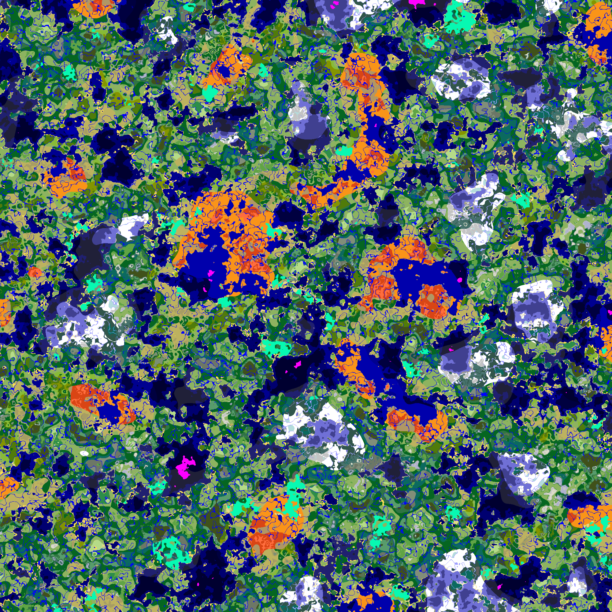

Cubiomes.jl
Cubiomes.jl is a Julia port of the Cubiomes C library. It allows to imitate the structure and biome generation of Minecraft worlds very fast and efficiently. Compared to the original C library, Cubiomes.jl is faster and much easier to use thanks to Julia.
Julia can be run in a script using julia script.jl, in the REPL by typing julia and then writing the code, in a jupyter notebook, in a pluto notebook, etc.
Examples
Find a mushroom fields biome at a predefined location:
using Cubiomes
using Base.Iterators: countfrom
function search_biome_at(x, z, y)
overworld = Overworld(undef, mcv"1.18")
for seed in countfrom(zero(UInt64))
set_seed!(overworld, seed)
biome = get_biome(overworld, x, z, y)
if biome == Biomes.mushroom_fields
println("Seed $(signed(seed)) has a Mmushroom Fields at $((x, z, y))")
break
end
end
end
search_biome_at(0, 0, 63)Generate a map of biomes and save it as an image:
using Cubiomes
using FileIO
const overworld1_18 = Overworld(undef, mcv"1.18")
const worldmap = WorldMap(x=-1000:1000, z=-1000:1000, y=63)
function save_as_img!(worldmap, seed, path)
set_seed!(overworld1_18, seed)
gen_biomes!(overworld1_18, worldmap, 📏"1:16")
world2d = view2d(worldmap)
save(path, to_color(world2d))
end
save_as_img!(worldmap, 42, "world.png")The image world.png: 